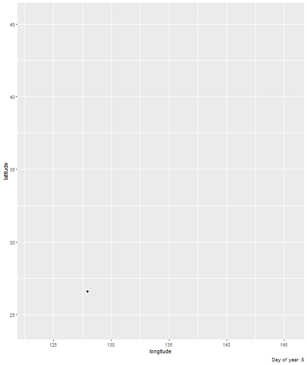

---
title: Building an animation step-by-step with gganimate
author: Alex Cookson
date: '2020-10-19'
slug: []
categories: []
tags: []
description: 'Mapping the Japanese cherry blossom front'
topics: []
---
Getting started with with {gganimate} is tough. There’s a big set of new functions and behaviours to learn. And the path from idea to polished animation – if you’re like me – is riddled with dead-ends, error messages, and exclamations of “Why is it doing that?!”
In this post, I want to be your {gganimate} guide and take you down one possible path that starts with an idea and ends with something beautiful. My hope is that by walking you down this one path, one tiny step at a time, you’ll be better equipped to walk your own {gganimate} path.
This is a huge post. And there are some things you’ll want to know before we depart:
Basics of {ggplot2}, like how to make a scatter plot
Basics of the theme() function, including the use of functions like element_rect() and element_text()
If you’re nervous around theme(), I still think you’ll get some value of out this. But as we get to later steps, you might be a bit confused.
We’re going to show when sakura (cherry blossom) trees typically bloom all across Japan. Flower-viewing (hanami) is a Japanese tradition over 1,000 years old that is often associated with sakura trees. We will show how the “cherry blossom front” moves from south to north as the year goes by. If you want more details on the data, I’ve compiled a GitHub README on it.
To start, let’s load the sakura data and the packages we’ll be using:
library(tidyverse) # Data manipulation
library(gganimate) # Animation
library(lubridate) # Working with dates
library(ggthemes) # ggplot2 theme for maps
library(ggimage) # Images in ggplot2 plots
library(extrafont) # Custom fonts
library(ggtext) # Customizing text colour in titles
library(kableExtra) # Nicely-formatted tables (you don't need this; it's just for the blog post)
sakura <- read_csv("https://raw.githubusercontent.com/tacookson/data/master/sakura-flowering/sakura-modern.csv")
This data contains bloom dates at different locations (station_id and station_name) for individual years. We want to show the typical bloom date, so let’s do a couple cleaning steps to calculate the mean day of the year that sakura trees flower (flower_doy) and bloom (full_bloom_doy).
sakura_overall <- sakura %>%
# Ensure complete records for flowering and full-bloom dates
filter(!is.na(flower_doy),
!is.na(full_bloom_doy)) %>%
# Calculate average days of year
group_by(station_id, station_name, latitude, longitude) %>%
summarise(flower_doy = mean(flower_doy),
full_bloom_doy = mean(full_bloom_doy),
.groups = "drop")
# Show what the data looks like
# (You don't need this; it's just for the blog post)
sakura_overall %>%
head() %>%
kable(format = "html") %>%
kable_styling()
station_id
station_name
latitude
longitude
flower_doy
full_bloom_doy
47401
Wakkanai
45.41500
141.6789
134.8103
138.6034
47406
Rumoi
43.94611
141.6319
130.8302
134.4717
47407
Asahikawa
43.75694
142.3722
126.8955
129.7761
47409
Abashiri
44.01778
144.2797
131.6724
134.3448
47412
Sapporo
43.06000
141.3286
123.6818
127.8939
47413
Iwamizawa
43.21167
141.7858
126.7885
129.7500
Are you ready? Let’s take the first step!
1. Plot a static graph
Animations show subsets of a dataset at different times, so I like to start by showing everything – all the data – in a static graph. That way I have an overall sense of the data I’m working with. This doesn’t make sense for some types of animations, but for this one it’s helpful.
The ultimate goal of our animation is to communicate the timing of sakura blooms in different places. Let’s forget the timing for now and just look at the places.
You can kind of make out the shape of Japan’s islands. (Those dots at the bottom-left are smaller islands like Okinawa.)
2. Create the simplest animation possible
This is where we start using {gganimate} functions. I like to start by making the simplest animation I can. I may have to pause and think – really think – about what I want to communicate to my audience, since that will dictate which transition_*() function to use. (transition_*() functions are {gganimate}’s engine. They are how we specify what data gets animated and when.)
Remember from Step 1 that we’re communicating the time and place of sakura blooms. The geographic coordinates of the stations take care of the place. The animation takes care of the time.
We have two “states” of bloom. Flowering (flower_doy) is when 5-6 buds on an observation tree are open. And full bloom (full_bloom_doy) is when more than 80% are open. Eventually, we’ll want our animation to communicate information about both states of bloom. But since we’re starting simple, let’s just look and when flowering starts.
We’ll use transition_reveal(), which starts us off without any data, adds (“reveals”) data as time goes on, and keeps that data visible until the end of the animation. It’s just like our static graph, except that individual data points will appear at different times instead of being there all at once.
We need to tell transition_reveal() when to reveal each data point, which we do with the along argument. Here, we tell the function to reveal “along” the flower_doy variable. All it takes is one extra line of code.
Since we’re starting to animate, we’re also going to save the ggplot() object to p, then pass p to the animate() function. This isn’t strictly necessary, but it lets us adjust the size of the animation and will let us tweak some settings in later steps.
We’ve shown our audience when cherry blossoms flower, but we also want to show when they’re in full bloom and when the bloom has ended. We’re going to up the complexity (just a little!) with a different transition function: transition_events(). It’s similar to transition_reveal() in that we start without data and that data gets revealed according to a variable we give.
There’s one key difference: data won’t stay visible until the end of the animation. They will disappear at a certain point. As with transition_reveal(), we just need to tell the function when the disappearance should happen. Instead of transition_reveal()’s along argument, transition_events() has two arguments to control the appearance and disappearance of data points: start and end.
There’s one more complication. transition_events() also needs us to specify a window of time for the points to appear and disappear, using the enter_length and exit_length arguments. These values aren’t important right now, but we need to put something in here for the animation to work. I promise we’ll come back to these arguments later. For now, let’s set them to 1.
Dynamic labels change depending on where in the animation you are. In our case, we’ll add a dynamic label showing the day of year, since that is the scale used by our variables for bloom dates. Different transition_*() types have different dynamic labels. transition_events() uses frame_time.
We’ll add a labs() argument with a caption argument that includes frame_time. We’re going to wrap frame_time in {curly braces}. Braces tell the function to execute the R code inside them. If we included frame_timewithout curly braces, our title would literally show “Day of year: frame_time” and wouldn’t change along with the animation.
Having day of year to over 10 decimal points of accuracy is distracting. However, since things inside curly braces act like R code, we can wrap the frame_time variable in a function and our caption will show the output of that function. So we’ll wrap it in a round() function to get it to the nearest integer.
The current animation is looped: as soon as it ends, it immediately starts again from the beginning. It can be helpful to add brief pauses at the start and end of the animation. These pauses make it easier for our audience to tell what’s going on.
To add pauses, we need to add start_pause and end_pause arguments to animate(). These arguments use number of frames (not seconds), which defaults to 10. Let’s set both of them to 15, which translates to 1.5-second pauses.
# Assigning plot to p
p <- ggplot() +
geom_point(data = sakura_overall,
aes(longitude, latitude)) +
transition_events(start = flower_doy,
end = full_bloom_doy,
enter_length = 1,
exit_length = 1) +
labs(caption = "Day of year: {round(frame_time, 0)}")
animate(p, start_pause = 15, end_pause = 15, height = 715, width = 600) ###

6. Add Japan country borders
This animation is a map, so borders are a useful reference point! {ggplot2} has its own borders() function, which draws basic borders for common entities like countries or continents. There are more sophisticated ways of dealing with borders, but this suits our purposes just fine, so we’ll stick with this simple method. We need to set the regions argument to “Japan”.
We’ll also set the fill and colour arguments so that we have a grey theme. I’m using R’s built-in greys grey##, where higher numbers give you a lighter grey. It’s bland, but we’ll make the colours more interesting later. Right now we’re focused on getting the borders set up.
Now that we have borders, the axis labels and gridlines are getting distracting. Our audience doesn’t need to pinpoint precise geographic coordinates, so let’s get rid of them. The {ggthemes} package has a theme, theme_map(), that gets rid of these extras that aren’t typically needed for maps.
One more thing. You probably didn’t notice, but Japan is stretched compared to what you’d see on most maps. That’s because we haven’t specified a map projection. Let’s do that with coord_map(), using the familiar Mercator projection.
Let’s add more reference points so that our audience can get their bearings. Specifically, let’s add locations of major cities, like Tokyo and Kyoto. This involves adding two elements to the animation: points for city locations and text for city names. (We’ll use geom_point for locations and geom_text for names.)
We already have the data we need in sakura_overall:
Geographic coordinates (longitude and latitude) tell us location
Station names (station_name) are just city names, so that gives us names
But I don’t want to use sakura_overall as the data source for our reference points. Remember, we just want to show major cities. If we showed every city in sakura_overall, it would dominate the animation and we wouldn’t be able to see much else.
Let’s create a separate data frame that only has the cities we want to show. I did some research to find nine cities fairly spread out across Japan, with decent-sized populations. To get our data frame for these reference points, we’ll add a filter() step that matches station_name to the list of cities I chose.
Now we add our geom_point() and geom_text() layers, specifying the data argument as sakura_labels (the data frame we just created).
We also add hjust (horizontal justification) and vjust (vertical justification) arguments to offset the city name from the location point. It can take some fiddling and a few tries to get the positioning exactly right. I tried 5 or 6 different combinations before I got things positioned right where I wanted them.
Using the default points to represent blooms is fine. But they’re a bit boring, don’t you think? Our data is about sakura trees, so let’s use sakura icons! I ended up buying an icon from Iconfinder, but there are tons of free icons out there if you don’t want to spend any money.
We’re going to replace our geom_point() function with geom_image(), from the {ggimage} package. geom_image() is almost the same, except that we have an extra argument – image – that we point to the image file we want to use. In my case, I save the image as sakura-no-border.svg in my project’s main directory. If you save yours in a different place, you may need to fiddle with the file path.
Speaking of fiddling, I had to try several values for the size argument. You may have to do the same.
(Note: This step is a bit of a hack. If there are better ways to do it, I’d love to learn them. This method is ugly…but it works.)
Our dynamic label currently shows day-of-year, which isn’t a very intuitive way to think about dates. Calendar dates are better. For example, “April 15” is more meaningful than “Day 106”. So let’s change our dynamic label to be a calendar date.
(WARNING: Hackiness starts here.)
My approach has two steps. First, we convert the format of frame_time (the dynamic label) from numeric – which is inherited from flower_doy and full_bloom_doy – to a date. We do this by adding the (numeric) frame_time to January 1. Because of how R handles addition with dates, we end up converting day-of-year to an actual calendar date.
The catch is that date objects need to have a year. So our January 1 “base date” needs to be January 1 of a specific year. We’re going to use “2019-01-01” as our base date. Why? I’m writing in 2020 and 2019 is the most recent non-leap year. (I don’t want our generic calendar dates to have a February 29.) I could have just as easily used 2018, 2017, or even 1967.
I do all this conversion in curly braces in the labs() function’s caption argument: pass "2019-01-01" into {lubridate}’s ymd() to convert text into date format, then add frame_time. Note that I had to add backslashes \ before the quotation marks in "2019-01-01" as escape characters. If I hadn’t added the backslashes, R would interpret those quotation marks as the end of the text argument of caption instead of part of the text argument.
Second, we convert the ISO 8601-formatted date to a generic calendar date, like “April 15”. (Apologies to non-North American readers.) I did this by extracting the month and day from the date we calculated in step one and formatting it how I wanted:
The month() function returns a number by default, so setting label = TRUE and abbr = FALSE gets us unabbreviated month names, like “April”.
The day() function is fine as-is. It returns a number, which is what we want.
Next, I used paste() to combine the two into a single string.
The date we’re seeing is technically 2019, but since we don’t show the year, it serves just fine as a generic calendar date.
Let’s use a more interesting font. There are different ways to use custom fonts in R, but I used the {extrafont} package. Getting it set up is its own tutorial, but if you haven’t used it before, the setup instructions are good.
Once we go through {extrafont}’s process for using downloaded fonts, we change our geom_text() and theme() functions to include an argument that specifies Manga Temple as the font to use.
Let’s finally get away from this drab grey colour palette. I wanted something warm that was evocative of old maps, so I went with a cream/brown palette. I got the specific hex values for colours by literally Googling “old maps” and using a colour eyedropper Chrome extension. I ended up with three colours:
Cream for the background
Medium Brown for Japan’s landmass
Dark Brown for points and text
We need to change colour in four places:
borders() for the landmass
geom_point() for the city location points
geom_text() for the city names text
theme() for description text (text argument) and background (plot.background argument)
Let’s make the animations more nuanced. Our sakura icons are appearing/disappearing instantly, which is a bit jarring. Let’s try for something peaceful and organic, to reflect the subject matter. Specifically, let’s mimic the blossoms themselves: have them grow and “flower” when they appear, then fall away when they disappear. To do this, we’ll use {gganimate}’s enter_*() and exit_*() functions, which specify animations for data appearing and disappearing from the plot.
For the “flowering”, we’ll use enter_grow(), which starts our sakura icon small and grows to the size we specify.
For the falling away, we’ll use two transitions, which will happen at the same time: exit_shrink(), which shrinks the icon to a small point before disappearing, and exit_drift(), which shifts the icon in a direction we specify before disappearing.
exit_drift() can take two arguments: x_mod for horizontal movement and y_mod for vertical movement. (You can combine them for diagonal movement.) Since we want our blossoms to “fall”, we set y_mod to a negative value.
While we’re at it, let’s also change the timing of enter and exit animations. Previously, we gave the icons one day to enter and one day to exit. We’ll do three tweaks:
Start the enter animation three days before the flower date.
Give the enter and exit animations six days to do their thing. This matters now that we actually have animations that take time. Previously, we set enter_length and exit_length to 1, which didn’t matter because the icons were appearing instantly.
Set the range argument. This part is new. By default, the animation starts at the lowest value in our data and stops at the highest value, but this has us starting the animation on January 8 and ending it on May 26. Setting a custom range argument gets us “round” dates. In our case, range = c(0, 151) starts us on January 1 and ends us on June 1.
Looks nice, but it feels too fast for the subject matter. I mentioned that I’m going for a peaceful, organic feel, but this feels rushed. animate() defaults to 100 frames at 10 FPS (frames per second), giving a default animation of 10 seconds (plus the 1.5-second pauses we added at the start and end).
We can adjust the duration directly with the duration argument. We can also adjust duration indirectly with the nframes argument. More frames at the default 10 FPS means longer duration.
I’m going to use the nframes method to make sure each day gets an equal number of frames. We have 152 days in the animation (remember last step when we set the range from 0 to 151?). So If we set nframes = 152 * 2, that will ensure each day lasts 2 frames, which is equivalent to one fifth of a second. Our animation will be about 30 seconds long.
It’s clear to us what’s being animated, but it won’t be clear to someone who hasn’t followed it from the ground up. Let’s add a title and blurb to explain what’s going on.:
A title that asks, “When do cherry blossoms bloom in Japan?”
A subtitle that adds context. The subtitle is a paste() function with a line break \n as the separator. This prevents the subtitle from being one long line that shoots off the edge of the plot.
That text is not in the right place. This will be another fiddling step to get the text exactly where we want it: centred at the top of the plot with a decent amount of whitespace around it.
To accomplish this, we need to adjust settings of individual plot elements, so we need to add four arguments to the theme() function:
plot.margin to adjust the margins around the entire plot
plot.title, plot.subtitle, and plot.caption to adjust size, alignment, and margins of text
We’re going to adjust text size with size, centre the title text with halign = 0.5, and adjust margins using the margin() function.
We are finally, finally at the last step. As a final tweak, let’s change the colour of some words in our titles to a sakura-inspired pink. We’ll be using the {ggtext} package for this, which gives us tons of flexibility in changing some (but not all) of a text element.
A full overview of {ggtext} is here, which I suggest you skim if you’re completely new to it. Our use of {ggtext} involves three changes:
Wrapping <span> tags around the words we want to change
Changing element_text() functions to element_textbox_simple() for text elements we’re changing. The new function recognizes the <span> tags and reads them properly
element_textbox_simple() uses halign as its argument for horizontal alignment, as opposed to hjust. So we need to change the name of those arguments
We started with an idea and ended up with something that looks quite nice. Again, this is one possible path to take. And it has its own hacks, tricks, and stumbles. But I hope by seeing how I built this animation, step-by-step, you gain some small insight into how blazing your own {gganimate} path.